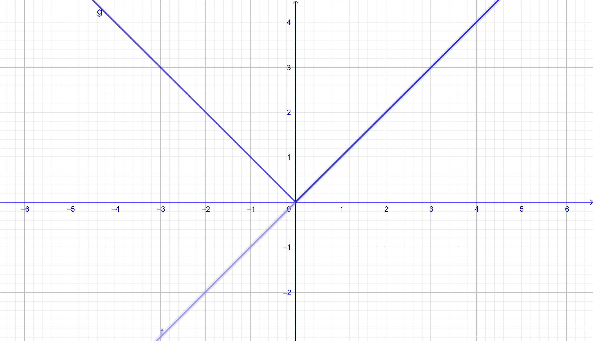
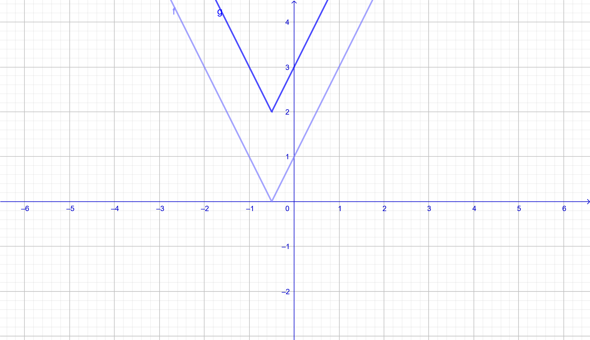
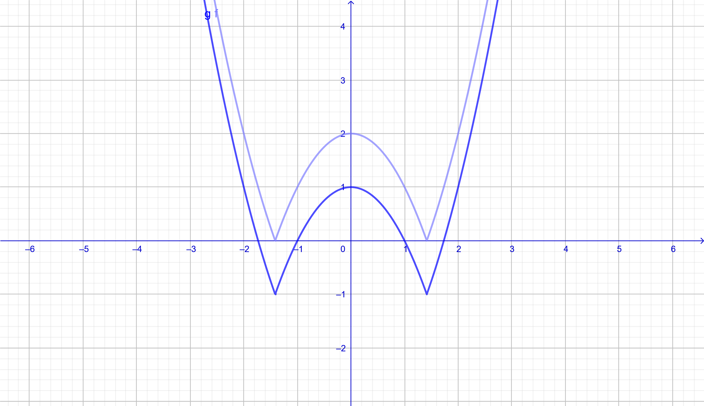
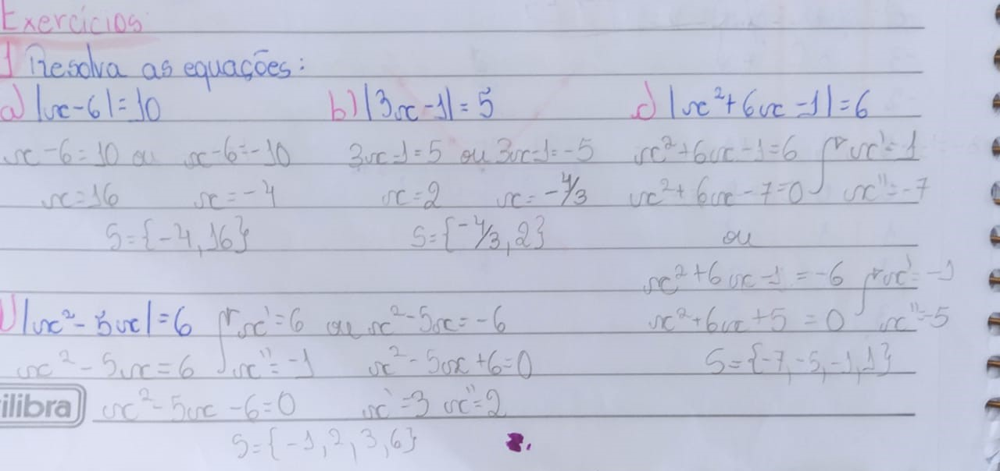
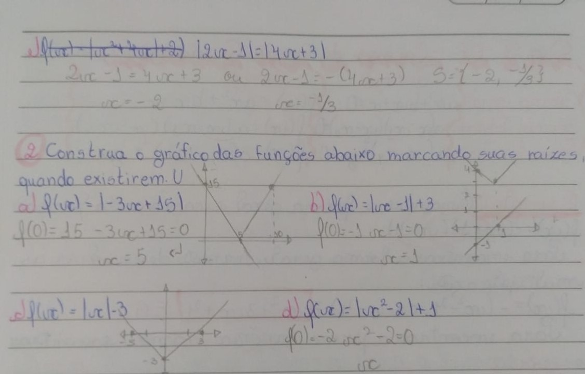

Funções Modulares
Um módulo é a distância de um número real até o número zero, sendo usado principalmente para medir a distância de um número negativo até zero, por exemplo, o número 2 tem duas unidades até o zero, então |2| = 2, mas -2 também tem duas unidades até zero, então |-2| = 2.
Assim, quando possuímos uma função, com váriavel x, dentro de um módulo, teremos uma função modular, mas teremos que ter em mente que apesar do resultado do módulo ser sempre positivo, sua váriavel pode ser negativa!
Exemplos:(realizados em sala de aula)
Função Afim: |2x - 1| = 3
Nesse caso iremos ter que fazer a função de duas maneiras diferentes, uma em que 3 é negativo, e a outra em que 3 é positivo:
| 2x - 1 = 3 | 2x - 1 = -3 |
| 2x = 4 | 2x = -2 |
| x = 2 | x = -1 |
Função Quadrática: Temos dois exemplos de função quadrática, a completa, ou em que apenas o coeficiente 𝑐 está faltando, e a incompleta, em que temos apenas os coeficientes 𝑎 e 𝑐. No caso da incompleta, apenas realizamos ela normalmente, no caso da completa deveremos achar as raízes.
Incompleta: |x2 - 9| = 5
| x2 - 9 = 5 | x2 - 9 = -5 |
| x2 = 9 + 5 | x2 = 9 - 5 |
| x = ±√14 | x = ±√2 |
Completa: |x2 + 6x - 1| = 6
| x2 + 6x - 1 = 6 | x2 + 6x - 1 = -6 |
| x2 + 6x - 7 = 0 | x2 + 6x + 5 = 0 |
| x1 = 1 x2 = -7 | x1 = -1 x2 = 5 |
Dois módulos: |x - 2| = |3 - 2x|
Nesse caso, teriamos que refazer quatro vezes, para que os dois lados ficassem negativos e positivos, mas seria uma perca de tempo desnecessária, porque encontrariamos resultados iguais, estão basta fazermos uma em que as duas são positivias e uma em que a segunda é negativa.
| x - 2 = 3 - 2x | x - 2 = -(3 - 2x) |
| 3x = 5 | x - 2x = -3 + 2 |
| x = 5/3 | x = 1 |
Gráfico
Para fazer o gráfico de uma função modular é muito simples! Basta fazer normalmente o gráfico da função e depois colocar o valor de 𝑓(𝑥) para positivo.
𝑓(𝑥) = 𝑥 g(𝑥) = |𝑥|
𝑓(𝑥) = 𝑥2 - 1 g(𝑥) = |𝑥2 - 1|

Além disso, também temos o caso em que se soma o subtraí um valor fora do módulo. Caso somado, deverá subir o gráfico o tanto de vezes do número, caso subtraído o número ira virar negativo e descer.
Adição: 𝑓(𝑥) = |2𝑥 + 1| g(𝑥) = |2𝑥 + 1| + 2
Subtração: 𝑓(𝑥) = |𝑥2 - 2| g(𝑥) = |𝑥2 - 2| - 1
Atividades
Deixarei a foto de algumas atividades realizadas em aula:


Além das atividades realizadas em aula, também deixarei um vídeo onde estão sendo resolvidas questões comentadas que estão relacionadas diretamente com funções modulares:
Considerações
O conteúdo de funções modulares foi bem breve e fácil de compreender, tive apenas uma certa dificuldade no começo para entender que apenas era o y que ficava positivo e não o x, então demorei a compreender os gráficos, porém depois disso ficou muito mais fácil e creio que tenha ido bem nesse conteúdo. Por ter ficado meio em cima da prova, acabou que em alguns pontos do conteúdo acabei tendo uma dúvida na hora aplicar, como as partes em que havia adição ou subtração fora do módulo, mas depois acabei entendendo e não tive mais nenhuma dúvida.